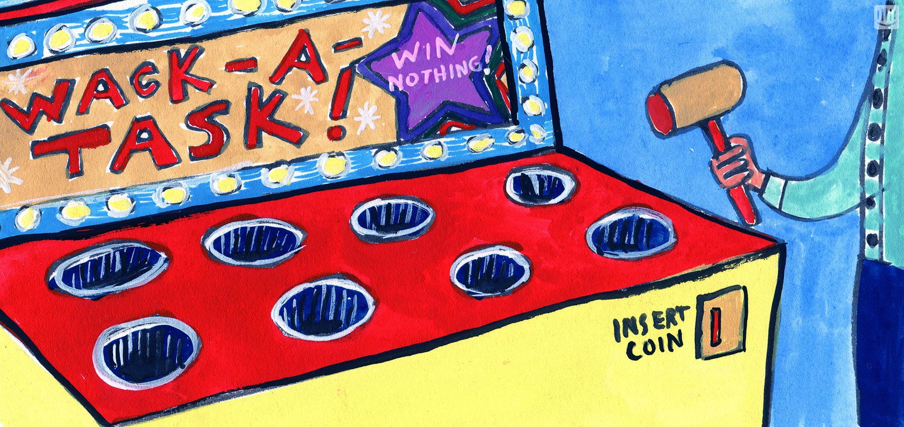

Intranet in 30 Minuten
Georg Schmidl (Scandio)
Intranet?
- Was ist mit Intranet gemeint? Das Netzwerk?
- Diese eine Intranet Appliktion, die als Startseite im Browser eines Unternehmens eingerichtet ist
-> Was braucht unsere Intranet Applikation?
Zuhause für Abteilungen
- Information präsentieren
- An Dokumenten zu kollaborieren
- Unterschiedliche Ansprüche / Arbeitsweisen
Abteilungen (Beispiele):
- Marketing
- Finance
- Management
- Customer Support
- Development
- Consulting
Funktionen
- Startseite
- Personenverzeichnis
- News
- Navigation
- Aufgabenverwaltung
- Schwarzes Brett
- Kalender
- Umfragen
- Diagramme

Implementierung mit...
?
... Confluence!
Und Plugins:
- Lively Theme (Scandio)
Alternative: Welcome Message oder Refined Theme (RefinedWiki) - Lively Blogs (Scandio)
Alternative: Standard Confluence Blogs - Hide Elements (Scandio - Free)
Alternative: User Macro mit einer Zeile Code - User Profiles (Communardo)
- Team Calendars (Atlassian)
- Polls (Simplenia)
- Gliffy Diagrams (Gliffy)

Confluence installieren
- Download Confluence Server
- Lokales Confluence gestartet
- Zusätzlich Crowd als User Directory
- -> Confluence
Users
- Confluence Admin -> Users & Security -> User Directories
- Url:
http://nip.local:4990/crowd - Application Name/Password:
confluence - Confluence Admin -> Users & Security -> Users
Spaces
- Abteilungen: Marketing, Finance, Management, Customer Support, Development, Consulting
- Funktionen: News, Community, Events, Dashboard
- Spaces -> Create Space (
Management) - Confluence Admin -> Administration -> Backup & Restore
- -> Space Directory
Benutzerverzeichnis
Problem:
- Felder nicht erweiterbar
- Keine Filtermöglichkeiten
Lösung:
- Confluence Admin -> Manage Add-ons -> User Profiles for Confluence
- Profile Felder anpassbar (Synchronisation mit LDAP möglich)
- People Directort filterbar
- Macro verfügbar um gefilterte Listen zu erstellen
Blogs
- Blog Posts müssen aufs Dashboard ;)
- Lively Blogs fügt Stream auf Dashboard hinzu
- Confluence Admin -> Manage Add-ons -> Lively Blogs for Confluence
- -> Dashboard
Zusatzfunktionen:
Bereichs-Navigation
Lösung: Theming!
- Confluence Admin -> Manage Add-ons -> Lively Theme for Confluence
- Confluence Admin -> Look & Feel -> Themes
- -> Dashbord
Navigations Widget:
- Navigation Seite erstellen im Dashboard Space
Navigation60px - Confluence Admin -> Lively -> Widget Settings (Remove Welcome, add Navigation)
- -> Dashbord
Aufgabenverwaltung
Schwarzes Brett
- -> Community Space
- Section 2/1
- Banner hinzufügen (Original size)
- Blog Post Macro
- Panel mit Recently Updated mit Comments als Sidebar
- Hinzufügen Button mit Tabelle
http://nip.local:1990/confluence/pages/createblogpost.action?spaceKey=COMBeitrag Hinzufügen
Seite verschlanken:
Schwarzes Brett Widget
- Dashboard Seite hinzufügen
Schwarzes Brett - Recently Updated mit
blogpost,commentin SpaceCOMohne Titel - Als Widget hinzufügen
- -> Dashboard
Kalender
- Einträge hinzufügen (Firmen Events, Geburtstage)
- Kalender importieren
- Confluence Admin -> Manage Add-ons -> Team Calendars
- -> Dashboard
Event erstellen:
- Create Calendar
Events - -> Dashboard
Umfragen
- Meinung der Mitarbeiter ist wichtig :)
- Confluence Admin -> Manage Add-ons -> Polls for Confluence
- Make a Choice
Welche T-Shirt Farbe gefällt euch?rot/schwarz
Umfrage Teilen:
- Blogpost oder Dashboard
Aktuelle Umfrage - -> Widget Settings
- -> Dashboard

Diagramme
- Visuelle Dokumentation
- Confluence Admin -> Manage Add-ons -> Gliffy
- -> Development Space
Unser Intranet ist eingerichtet!
- Easy, oder? :)
- -> Startseite